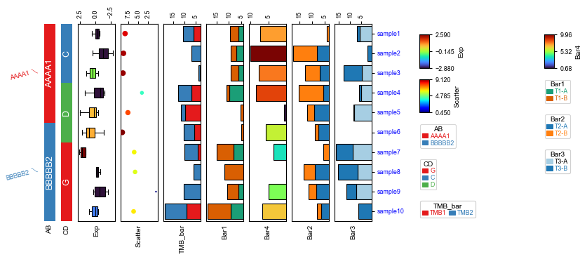

[4]:
import os,sys
import matplotlib.pylab as plt
import pickle
import glob
import numpy as np
import matplotlib as mpl
import pandas as pd
mpl.style.use('default')
mpl.style.use('default')
plt.rcParams.update({
'font.family': 'sans-serif',
'font.sans-serif': 'Arial',
'font.family': 'Arial',
# Base font size (set so text is ~7–8 pt at final print size)
'font.size': 8, # main text (labels, ticks, legend)
'axes.labelsize': 9, # axis labels (x/y)
'axes.titlesize': 10, # panel titles / figure titles
'figure.titlesize':11,
'xtick.labelsize': 8, # x-tick labels
'ytick.labelsize': 8, # y-tick labels
'legend.fontsize': 8, # legend text
'legend.title_fontsize': 9, # legend title (if used)
# Lines and elements for clarity
'lines.linewidth': 1.2, # data lines
'axes.linewidth': 1.0, # axis spines
'xtick.major.width': 1.0,
'ytick.major.width': 1.0,
'xtick.major.size': 4,
'ytick.major.size': 4,
# General figure appearance
'figure.dpi': 80, # high resolution for export
'savefig.dpi': 300, # when using plt.savefig()
'figure.figsize': (6.5, 4.5), # example starting size (adjust to your needs; e.g., ~17 cm wide for full page)
# 'figure.constrained_layout.use': True,
'savefig.transparent': True,
'pdf.fonttype':42,
'ps.fonttype':42,
})
import pickle
sys.path.append(os.path.expanduser("~/Projects/Github/PyComplexHeatmap"))
import PyComplexHeatmap as pch
# print(PyComplexHeatmap.__version__)
[5]:
df = pd.DataFrame(['AAAA1'] * 5 + ['BBBBB2'] * 5, columns=['AB'])
df['CD'] = ['C'] * 3 + ['D'] * 3 + ['G'] * 4
df['F'] = np.random.normal(0, 1, 10)
df.index = ['sample' + str(i) for i in range(1, df.shape[0] + 1)]
df_box = pd.DataFrame(np.random.randn(10, 4), columns=['Gene' + str(i) for i in range(1, 5)])
df_box.index = ['sample' + str(i) for i in range(1, df_box.shape[0] + 1)]
df_bar = pd.DataFrame(np.random.uniform(0, 10, (10, 2)), columns=['TMB1', 'TMB2'])
df_bar.index = ['sample' + str(i) for i in range(1, df_box.shape[0] + 1)]
df_scatter = pd.DataFrame(np.random.uniform(0, 10, 10), columns=['Scatter'])
df_scatter.index = ['sample' + str(i) for i in range(1, df_box.shape[0] + 1)]
df_bar1 = pd.DataFrame(np.random.uniform(0, 10, (10, 2)), columns=['T1-A', 'T1-B'])
df_bar1.index = ['sample' + str(i) for i in range(1, df_box.shape[0] + 1)]
df_bar2 = pd.DataFrame(np.random.uniform(0, 10, (10, 2)), columns=['T2-A', 'T2-B'])
df_bar2.index = ['sample' + str(i) for i in range(1, df_box.shape[0] + 1)]
df_bar3 = pd.DataFrame(np.random.uniform(0, 10, (10, 2)), columns=['T3-A', 'T3-B'])
df_bar3.index = ['sample' + str(i) for i in range(1, df_box.shape[0] + 1)]
df_bar3.iloc[5,0]=np.nan
df_bar4 = pd.DataFrame(np.random.uniform(0, 10, (10, 1)), columns=['T4'])
df_bar4.index = ['sample' + str(i) for i in range(1, df_box.shape[0] + 1)]
df_bar4.iloc[7,0]=np.nan
print(df)
print(df_box.head())
print(df_scatter)
print(df_bar)
print(df_bar1)
print(df_bar2)
print(df_bar3)
print(df_bar4)
AB CD F
sample1 AAAA1 C 0.930188
sample2 AAAA1 C -0.093925
sample3 AAAA1 C -0.368558
sample4 AAAA1 D -0.868557
sample5 AAAA1 D -1.364857
sample6 BBBBB2 D -0.259479
sample7 BBBBB2 G -0.460343
sample8 BBBBB2 G -0.296751
sample9 BBBBB2 G -1.027369
sample10 BBBBB2 G -0.443103
Gene1 Gene2 Gene3 Gene4
sample1 -0.441150 -0.685767 -0.211560 0.601082
sample2 0.478157 -0.860439 -1.689526 -2.882375
sample3 1.454780 0.163140 0.740371 -0.485751
sample4 -1.235108 -0.305013 -1.429477 1.684756
sample5 0.048505 0.519899 2.527911 -0.452874
Scatter
sample1 8.393122
sample2 8.809044
sample3 8.932724
sample4 4.068440
sample5 7.667705
sample6 9.119778
sample7 6.051524
sample8 5.824975
sample9 0.452278
sample10 6.203144
TMB1 TMB2
sample1 5.794572 4.782071
sample2 2.212025 4.764942
sample3 3.183444 0.451220
sample4 6.845737 5.998645
sample5 9.818383 1.573191
sample6 5.786475 4.530652
sample7 3.982930 5.988079
sample8 0.385917 5.485879
sample9 2.089721 8.132162
sample10 9.128506 9.473268
T1-A T1-B
sample1 5.967716 3.416447
sample2 6.866315 2.240530
sample3 6.187360 3.076189
sample4 9.875868 1.109505
sample5 1.855135 3.435299
sample6 1.236508 3.554431
sample7 8.079663 6.986970
sample8 2.198164 9.727263
sample9 5.963682 4.656302
sample10 9.224241 9.398435
T2-A T2-B
sample1 0.942395 3.090426
sample2 8.110493 9.166797
sample3 6.794090 5.833839
sample4 5.431872 9.820179
sample5 9.215471 2.760689
sample6 7.334393 1.602748
sample7 2.117741 3.346459
sample8 8.854874 4.304654
sample9 8.347813 2.915929
sample10 6.238957 1.685632
T3-A T3-B
sample1 5.713383 1.224620
sample2 0.329786 1.855992
sample3 4.700111 8.097179
sample4 5.009669 0.933330
sample5 8.253078 0.253907
sample6 NaN 1.144202
sample7 8.883879 7.422567
sample8 6.694836 8.763192
sample9 7.270952 4.478294
sample10 0.050178 6.363404
T4
sample1 7.245278
sample2 9.957451
sample3 7.730578
sample4 8.453333
sample5 0.680333
sample6 5.781626
sample7 3.690270
sample8 NaN
sample9 4.904881
sample10 6.641884
[13]:
plt.figure(figsize=(8, 4))
row_ha = pch.HeatmapAnnotation(
label=pch.anno_label(df.AB, merge=True,rotation=15),
AB=pch.anno_simple(df.AB,add_text=True,legend=True,
#text_kws=dict(bbox={"pad":0},va='center',ha='center',rotation_mode='anchor')
),
CD=pch.anno_simple(df.CD,add_text=True,legend=True),
Exp=pch.anno_boxplot(df_box, cmap='turbo',legend=True),
Scatter=pch.anno_scatterplot(df_scatter),
TMB_bar=pch.anno_barplot(df_bar,legend=True,cmap='Set1'),
Bar1=pch.anno_barplot(df_bar1,legend=True,cmap='Dark2'),
Bar4=pch.anno_barplot(df_bar4,legend=True,cmap='turbo'),
Bar2=pch.anno_barplot(df_bar2,legend=True,cmap='tab10'),
Bar3=pch.anno_barplot(df_bar3,legend=True,cmap='Paired'),
plot=True,legend=True,
legend_order=['Exp','Scatter','AB','CD','TMB_bar','Bar4','Bar1','Bar2','Bar3'],
legend_vgap=5,legend_hgap=30,
axis=0,legend_hpad=20,label_side='bottom',wgap=3,
)
row_ha.show_ticklabels(df.index.tolist(),fontdict={'color':'blue'},rotation=0)
plt.show()
Plotting HeatmapAnnotations
Collecting annotation legends..
Incresing ncol

[ ]: